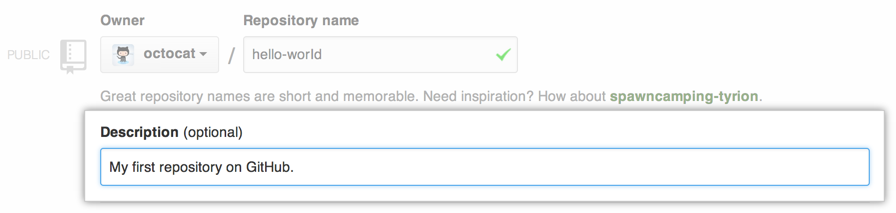
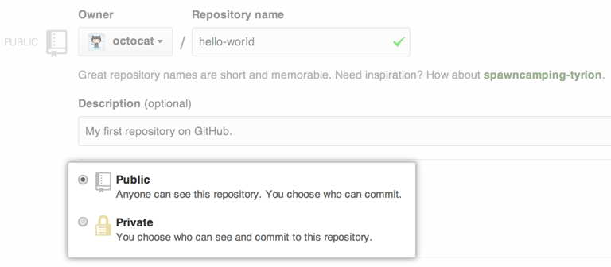
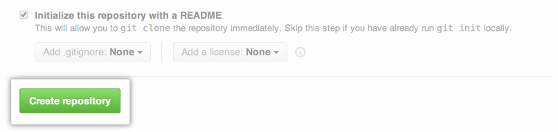

To put your project up on GitHub, you'll need a repository for it to live in. Let's create one!
On GitHub, you can store all kinds of projects in repositories. Personal repositories belong to user accounts, so after you've signed up for GitHub, you can create your first repository!
Create a new repository on GitHub
In the upper-right corner of any page, click , and then click New repository.
Create a short, memorable name for your repository. For example, "hello-world".

- Optionally, add a description of your repository. For example, "My first repository on GitHub." 
- Choose between creating a public or private repository.
- Public repositories are a great choice for getting started! They're free, and visible to any user on GitHub, so you can benefit from GitHub's collaborative community.
- Private repositories require a little more setup. They're paid, and only available to you, the repository owner, as well as any collaborators you choose to share with. For more information, see "What plan should I choose?." 
- Select Initialize this repository with a README.
- Click Create repository. 
Congratulations! You've successfully created your first repository, and initialized it with a README file.
Commit your first change
A commit is like a snapshot of all the files in your project at a particular point in time.
When you created your new repository, you initialized it with a README file. README files are a great place to describe your project in more detail, or add some documentation such as how to install or use your project. The contents of your README file are automatically shown on the front page of your repository.
Let's commit a change to the README file.
- In your repository's list of files, click README.md.
- Above the file's content, click .
- In the Code view, type some information about yourself.
- Above the new content, click Preview changes.
- Review the changes you made to the file. You'll see the new content in green.
- At the bottom of the page, under "Commit changes," type a short, meaningful commit message that describes the change you made to the file.
- Click Commit changes.
Celebrate
Congratulations! You have now created a repository on GitHub, including a README file, and created your first commit on GitHub. What do you want to do next?
- Set Up Git
- Create A Repository
- Fork A Repository
- Be Social